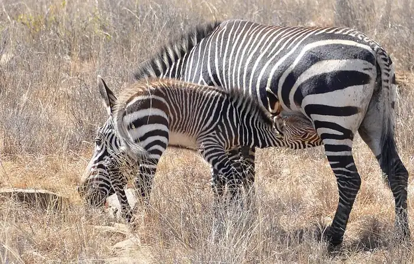
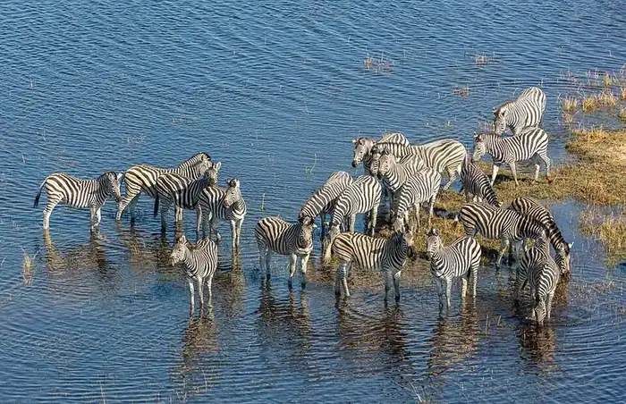
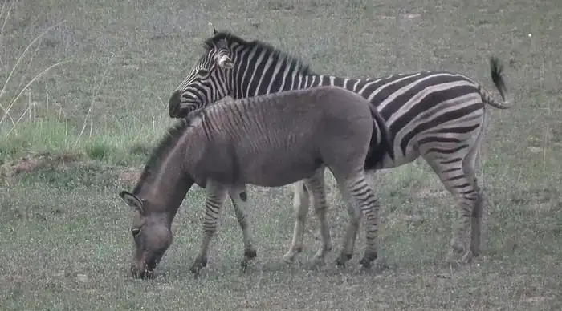

The candidates
Darwin, Wallace and generations of naturalists proposed that stripes break up the outline, confuse predators, or help animals recognise each other. The thermoregulation hypothesis came later: black stripes absorb heat, white ones reflect it, and the difference might drive convection. The fly hypothesis is the most recent and the least intuitive — biting flies, particularly tsetse and tabanids, appear to avoid landing on striped surfaces.
Maps, diagrams and images






Each hypothesis makes a different prediction about where stripes should be, how many there should be, and what should happen when a fly approaches.
The evidence
The biogeographic test is the strongest. Analyses mapping stripe presence and intensity against climate, predators and fly ranges across equid species find the best predictor is the range of biting flies, not predator density and not temperature. Zebras with the boldest stripes live where the flies are worst.
The experimental test followed. In 2019 a team dressed horses in striped coats — black-and-white, and controls in single colours — and counted fly landings. Striped coats attracted markedly fewer. A 2023 study extended this to full-body patterns and found the same direction of effect. This is rare in behavioural ecology: a hypothesis with a controlled experiment behind it, in a field that mostly runs on correlation.
Best supported: fly avoidance. Biogeography and at least two controlled experiments point the same way.
Weakly supported: thermoregulation. There is a measurable effect of stripe pattern on surface temperature, and it is small.
Poorly supported: predator confusion. The evidence is theoretical and the pattern does not obviously help against the predators that actually hunt zebras.
Not supported: the idea that stripes are for individual recognition. Zebras recognise each other perfectly well without them.
The honest position: one mechanism with real evidence, several with suggestive evidence, and no reason to think only one is at work.
Why it is in the archive
Because it is the archive's pleasantest example of science working as advertised: a question everyone has an intuition about, several competing explanations, and an experiment that discriminated between them. It also shows how a good hypothesis can be dull — the answer is flies, not majesty.
Open resources on this topic
- PapersOpen-access articles: DOAJ · PubMed Central · Internet Archive Scholar
- BooksPublic-domain and borrowable copies: Open Library · Project Gutenberg · Google Books · Internet Archive
More images
Cite this page
Momin, S. (2026). Why Zebras Have Stripes. The Larger World Archive. https://drsamonline.github.io/LARGE_GLOBE/zebra-stripes.htmlMomin, Sohil. “Why Zebras Have Stripes.” The Larger World Archive, 2026, https://drsamonline.github.io/LARGE_GLOBE/zebra-stripes.html.Momin, Sohil. “Why Zebras Have Stripes.” The Larger World Archive, 2026. https://drsamonline.github.io/LARGE_GLOBE/zebra-stripes.html.@misc{why2026zebra,
author = {Momin, Sohil},
title = {Why Zebras Have Stripes},
year = {2026},
howpublished = {The Larger World Archive},
url = {https://drsamonline.github.io/LARGE_GLOBE/zebra-stripes.html},
note = {Last reviewed 20 November 2026}
}Last reviewed 20 November 2026 · Corrections policy · this page is not peer reviewed
Sources for this page
- Wikipedia, “Zebra” — species, stripes and the competing explanationsen.wikipedia.org
- Caro et al. (2014), Nature Communications — the biogeography of stripingdoi.org
- Wikipedia, “Tabanidae” — the flies the hypothesis is abouten.wikipedia.org
- Wikipedia, “Disruptive coloration” — the camouflage case, and its problemsen.wikipedia.org